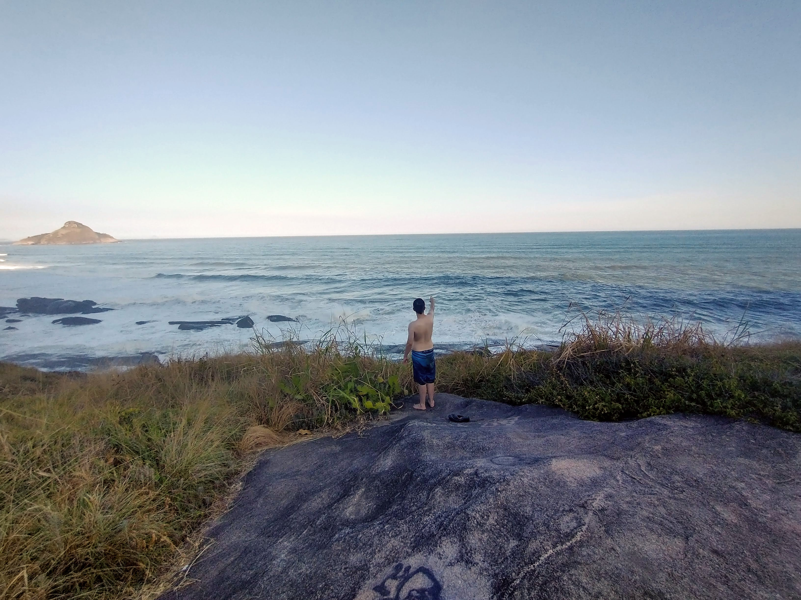

São Paulo - SP
A maior cidade de São Paulo e também a terra onde fui nascido e criado. Cheia de prédios altos, muito asfalto e grandes centros comerciais. Com toda certeza é uma terra de grandes oportunidades, mas o alto custo de vida, a superpopulação e principalmente a poluição do ar, pelo menos pra mim, tornam São Paulo um lugar que não tenho vontade de voltar a morar.
Rio de Janeiro - RJ

Realmente o Rio é tudo que a televisão mostra de bom, mas com algumas resalvas. As praias são todas lindas e não lotadas demais se sober ir nas praias certas, o Cristo Redentor é maravilhoso também e apesar do valor vale a pena subir até o topo pra tirar algumas fotos e vislumbrar a vista. Acredito que o único ponto que eu gostaria de "reclamar" é que a água do mar é MUITO salgada, de forma que a sensação de estar na água é como se várias pedrinhas estivessem arranhando suas pernas o tempo todo, saímos bem vermelhos por isso, mas ainda sim recomendo pelo menos um breve mergulho.
Campina Grande - PB
Terra do maior São João do mundo, 30 dias de pura festa, comidas típicas e muita alegria. Mas apesar de ser uma cidade conhecida mais pela festa em si, Campina Grande é uma cidade maravilhosa para se viver, diferente de muitas partes do estado, Campina Grande tem um clima bem agradável no sentido de temperatura e umidade do ar, no inverno o frio se faz presente, principalmente no período da noite, mas ainda sim com temperaturas médias ainda relativamente altas, podendo assim curtir atividades de lazer o ano inteiro, sem se preocupar com resfriados ou com um frio insuportável.
Esperança - PB
Um ciade extremamente pequena, mas com um povo de coração enorme, a cidade de Esperança se localiza no interior da Paraíba, aproximadamente 40 min de Campina Grande. Por se tratar de uma cidade de elevada altitude, mesmo sendo no nordeste é possível ter que sair bem agasalhado em alguns dias do ano. As chuvas frequentes no inverno somado com a altitude, fazem com que a cidade possa chegar na casa dos 16°C que se comparado com cidades mais frias não parece muita coisa, mas se você considerar que a temperatura média do estado gira em torno dos 25-30°C, pode ter certeza que com o tempo você também vai querer um casaco.
Rio Tinto - PB
Falando em cidades pequenas, também não é possível deixar passar a famosa cidade de Rio Tinto, localizada no caminho entre Mamanguape e a Baía da Traição. Originalmente Rio Tinto foi uma terra indígena e até hoje existem aldeias nos erradores da cidade, é possível encontrar diversas pessoas com antepassados índios ou até mesmo que façam parte de tribos dos dias atuais. Se você estiver buscando uma cidade com muitas opções de trilhas, passeios da mata, história e itens indígenas, Rio Tinto é o destino pra você.
João Pessoa - PB
João Pessoa, capital da Paraíba, é uma cidade encantadora e acolhedora, conhecida por suas belas praias e por ser o ponto mais oriental das Américas, onde o sol nasce primeiro. Com um clima tropical e ensolarado quase o ano inteiro, a cidade oferece uma combinação de belezas naturais e históricas. Suas principais praias, como Tambaú, Cabo Branco e Bessa, são ideais para relaxar e aproveitar o mar. O centro histórico é repleto de igrejas e edifícios coloniais que contam a história da região. Além disso, João Pessoa é famosa pelo pôr do sol na Praia do Jacaré, onde os visitantes podem apreciar a música ao vivo ao som do Bolero de Ravel. A cidade é também reconhecida por sua rica gastronomia nordestina e por ser uma das capitais mais verdes do Brasil, oferecendo uma atmosfera tranquila e uma experiência cultural rica para seus visitantes.